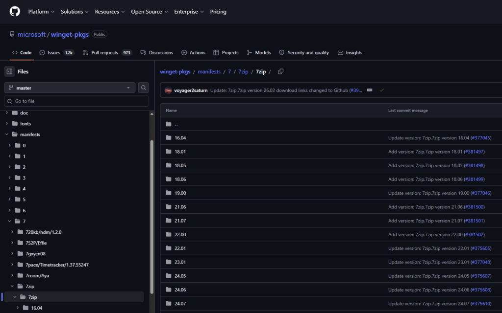
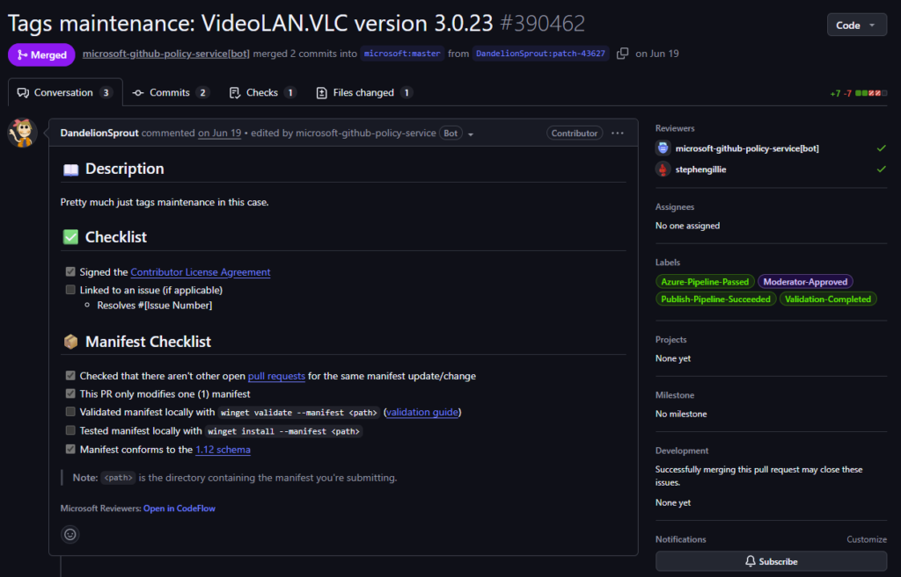
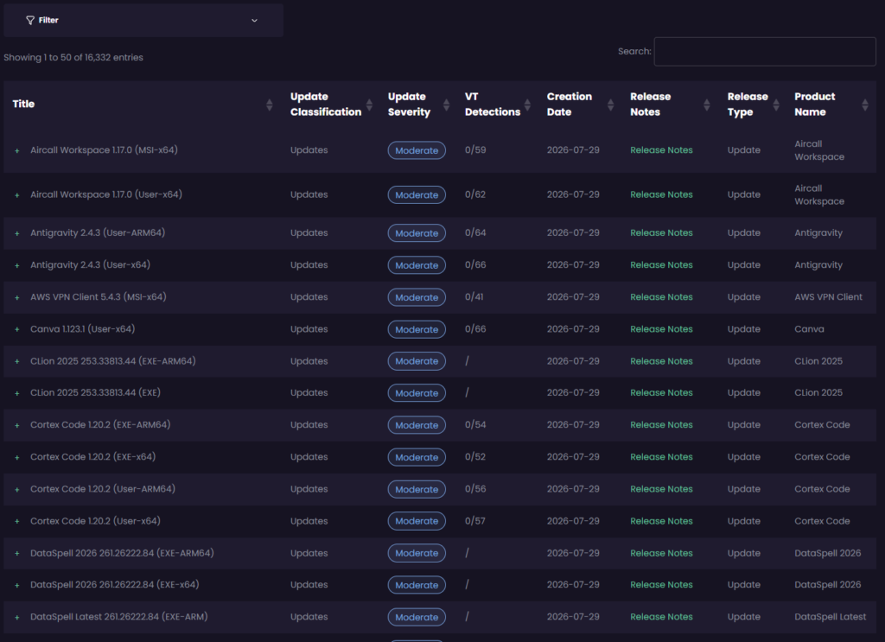
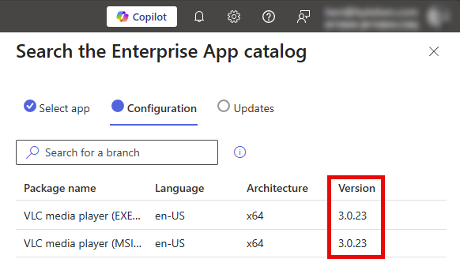

A deep-dive look at the Windows Package Manager Community Repository. Its manifests, submission pipeline, validation model, and a clear-eyed comparison against curated enterprise catalogs maintained by dedicated commercial teams.
Why this post exists
Sooner or later, everyone managing Windows endpoints in Intune hits the same question. “What’s my favourite cheese?” No, wrong blog. Let me refocus. “How do I get third-party apps into Intune, and how do I keep them patched once they’re there?”
Chrome, 7-Zip, Acrobat, Notepad++, Zoom, and the hundred other things your users need but Microsoft doesn’t author. You have 4 routes:
- Package them yourself and own that thing forever.
- Pull from the WinGet community repository (WinGet CLI / Store / ISV).
- Buy a curated catalog from a commercial vendor.
- Use Microsoft’s own Enterprise App Catalog (as of July 2026 it’s included with Microsoft 365 E5 rather than sold as an Intune Suite add-on).
The choice looks like a budget decision. But it’s really much more complex than that. When you start researching it, and after stumbling across some sub-reddits, there are 2 opposing claims:
WinGet is solid, there are over 10k apps, it’s flexible and free. Everything goes through automated validation and moderator review so it’s safe.
WinGet isn’t enterprise ready. Nobody owns the manifests, vendors don’t control them, and there’s no real testing. You need a quality, curated, catalog.
Both of the above statements get repeated a lot. Which one you hear tends to depend on who you’re talking to rather than on evidence. This post is an attempt to ground the question properly and to honestly remove my own personal bias from the comparison.
Full transparency: I work for Patch My PC. That cuts 2 ways and you should know about both. It means I see catalog work up close, which is useful. It also means I have an obvious interest in one of the answers, so every technical claim about WinGet below links to a primary source you can check without taking my word for anything. Where I can’t do that, in Part 4, I say so plainly rather than hoping you don’t notice.
I’ve written on this subject before, too. In May 2025 I published Curated vs. Crowdsourced, setting out the case for professional curation. I’ve kept thinking about it since, and what I wanted to do this time was stand those claims up side by side with the evidence rather than leave them as assertions. So that’s what this is…the same question, with my proverbial “thought patterns” documented.
Plenty of it holds up. Some of it looks different close up, and the validation pipeline is the clearest example. It does more than I credited it with, and Part 2 lays out precisely what it checks and where it stops. That seems worth saying out loud, because a claim you’re willing to re-examine in public is worth more than one you only ever repeat.
I’m on holiday…so had some decompress time to focus on this topic. We’re going to take WinGet apart, piece by piece, crumb by crumb, so you get to understand what a “package” actually is, who creates and maintains it, what the validation pipeline does (and, more importantly, what it doesn’t do), and then hold that up against what a commercial curated catalog vendor does before an update reaches your devices.
The lens throughout is the one that matters to people like us: the lifecycle of a Win32 app in Microsoft Intune. Content, install and uninstall behaviour, detection, requirements, supersedence, and everything that goes wrong between version N and version N+1.
A note on terminology before we start. “WinGet” is really 3 things, and conflating them is where most bad takes come from:
- The WinGet client is the CLI (and COM API/PowerShell module) that ships with App Installer on Windows 11.
- The Windows Package Manager Community Repository (
microsoft/winget-pkgson GitHub) is the defaultWinGetsource, a giant tree of YAML manifests describing where installers live and how to run them. - The msstore source is the Microsoft Store catalog, also queryable through the client.
When people argue about whether “WinGet is Enterprise ready,” they’re almost always arguing about #2, the community repository, because that’s where 7-Zip, Notepad++, VLC, Git, and everything else you’d deploy as a Win32 app lives. So that’s where we’ll spend our time.
Before we deep dive
Here’s how a WinGet app gets from a vendor’s website onto your devices.
- The package is just text. A winget package is a set of YAML files (manifests) in a public GitHub repository describing where a vendor’s installer lives, its SHA256 fingerprint, and the switches that install it silently. The repository holds no software of its own, only descriptions.
- Anyone can submit a version. New versions arrive as pull requests, raised mostly by community members and their automation rather than by the software vendors themselves.
- Every submission is vetted. An automated pipeline runs schema checks, hash verification, malware scanning, and a test install in a sandboxed VM, then a human moderator approves it. Merged changes usually reach clients within the hour.
- So here’s the obvious question, and the one this post exists to answer… what exactly does that vetting cover?
Where this post goes
- Part 1 asks what is a package, really? We take two apart line by line: 7-Zip, and then Chrome, which stresses every weak point in the model at once. This is where detection, ProductCodes, and silent switches live.
- Part 2 asks who puts new versions in, and what gets tested? The submission and moderation model, hard numbers on how current winget actually is, and a precise account of what the validation pipeline checks and what it leaves alone.
- Part 3 asks what breaks between version N and N+1? The specific mechanisms that turn “the new version is in the catalog” into a failed deployment, and what deploying WinGet apps through Intune really involves.
- Part 4 asks what does a curated catalog actually do for the money? The dedicated-team model measured against the same yardstick used on winget in Part 2.
- Part 5 puts them side by side, followed by a verdict, an evaluation checklist you can use on any catalog including winget, and a method for reproducing the freshness numbers yourself.
If you only read one part, make it Part 2. That’s where the evidence is.
Part 1: The anatomy of a WinGet package
The first thing to understand is that the community repository contains no binaries. A winget “package” is a set of YAML manifests that point at installers hosted on the vendor’s own infrastructure (or SourceForge, or GitHub releases). When a client installs a package, it downloads the installer from the vendor’s URL, verifies its SHA256 hash against the manifest, and runs it with the silent switches recorded in the manifest.
That single design decision drives almost everything else in this comparison:
- The repository can’t re-package, wrap, or transform anything. What the vendor ships is what runs.
- If the vendor replaces a binary in place at the same URL, the recorded hash no longer matches and installs fail until someone submits a corrected manifest.
- Your endpoints can download content from dozens of vendor CDNs, not from a storage location that you control.
Manifests live in the repo at a well-defined path:
manifests\<first letter of publisher>\<Publisher>\<Package>\<Version>\
{kind=link}

Each version of each package is its own folder containing (in the modern multi-file format) at minimum 3 files:
<Id>.yaml: the version manifest (ties the set together, names the default locale)<Id>.installer.yaml: the installer manifest (the part that actually matters operationally)<Id>.locale.<locale>.yaml: one or more locale manifests (publisher, description, license, URLs)
Teardown 1: 7-Zip 26.02
Rather than talk abstractly, let’s pull apart the actual manifest set for 7zip.7zip version 26.02, the current release as it exists in winget-pkgs today. (The repo still carries 25.01 from last August, and we’ll diff the two later, because what changed between them is instructive.) The version manifest is trivially small:
# Created with YamlCreate.ps1 Dumplings Mod # yaml-language-server: $schema=https://aka.ms/winget-manifest.version.1.12.0.schema.json PackageIdentifier: 7zip.7zip PackageVersion: "26.02" DefaultLocale: en-US ManifestType: version ManifestVersion: 1.12.0
2 things in those 7 lines already tell a story. First, the comment: # Created with YamlCreate.ps1 Dumplings Mod. This manifest wasn’t authored by Igor Pavlov (7-Zip’s developer), and it wasn’t authored by Microsoft. It was generated by a community member’s customised fork of the repository’s own PowerShell authoring script, almost certainly running as part of an individual’s automation. The 25.01 manifest before it carries a different stamp again, # Created with komac v2.16.0, a different community tool by a different contributor. Part 2 comes back to this.
Second, ManifestVersion: 1.12.0. The manifest schema itself is versioned and evolves continuously (1.0, 1.1, 1.2, and so on up to 1.12), gaining fields over time. Older package versions in the repo sit on older schemas. Tooling that consumes manifests has to cope with all of them.
Now the interesting file, the installer manifest. 7-Zip ships 6 installer nodes in this single version, so here are 2 of them, the x64 EXE and the x64 MSI, with the file-association and command metadata trimmed out:
PackageIdentifier: 7zip.7zip
PackageVersion: "26.02"
Scope: machine
UpgradeBehavior: install
ReleaseDate: 2026-06-26
ElevationRequirement: elevatesSelf
Installers:
- Architecture: x64
InstallerType: exe
InstallerUrl: https://github.com/ip7z/7zip/releases/download/26.02/7z2602-x64.exe
InstallerSha256: 6745FA76DC2EA031596D8678F6F6B99C3C1B435B4164A63485ADBBC7B8D82EF0
InstallModes:
- interactive
- silent
InstallerSwitches:
Silent: /S
SilentWithProgress: /S
InstallLocation: /D="<INSTALLPATH>"
ProductCode: 7-Zip
- InstallerLocale: en-US
Architecture: x64
InstallerType: wix
InstallerUrl: https://github.com/ip7z/7zip/releases/download/26.02/7z2602-x64.msi
InstallerSha256: DB407A4F6D4999E5C7BC00CE8A882BE94717B56E7FA68140FE3F12605D91643E
InstallerSwitches:
InstallLocation: INSTALLDIR="<INSTALLPATH>"
ProductCode: '{23170F69-40C1-2702-2602-000001000000}'
AppsAndFeaturesEntries:
- DisplayName: 7-Zip 26.02 (x64 edition)
ProductCode: '{23170F69-40C1-2702-2602-000001000000}'
UpgradeCode: '{23170F69-40C1-2702-0000-000004000000}'
InstallationMetadata:
DefaultInstallLocation: '%ProgramFiles%\7-Zip'
ManifestType: installer
ManifestVersion: 1.12.0If you package Win32 apps and eat cheese for a living, this file rewards close reading. Across all 6 nodes, here’s what the vendor actually ships:
- x86 (EXE + WIX)
- x64 (EXE + WIX)
- ARM (EXE)
- ARM64 (EXE)
A word on wix, because it looks cryptic. In winget’s schema, InstallerType is an enum of installer technologies: msi, wix, burn, exe, nullsoft, inno, msix, zip, portable and a few others. wix means it is an MSI, specifically one built with the WiX Toolset (Windows Installer XML). It’s a Windows Installer package and msiexec handles it exactly as you’d expect. WinGet distinguishes it from plain msi because the toolset used affects some behaviour and the validation pipeline treats the variants slightly differently. The related value burn is WiX’s bootstrapper, which is an EXE that wraps one or more MSIs, so burn is not an MSI even though it comes from the same toolset. Likewise nullsoft means NSIS and inno means Inno Setup. The generic exe value means what it says…an executable installer whose technology the manifest doesn’t identify.
1 package, 2 installer technologies. The same version offers both the plain EXE (InstallerType: exe, silenced with /S) and the MSI (InstallerType: wix, standard msiexec semantics). Note that 7-Zip’s EXE is Igor Pavlov’s own custom installer rather than a repackaged NSIS or Inno bundle, which is exactly why the manifest declares the generic exe rather than nullsoft. Which installer a targeted client picks depends on architecture, scope, locale, and client heuristics. That means 2 devices “installing 7zip 26.02 via WinGet” can end up with different installer technologies, different ProductCodes, and different ARP footprints.
Now imagine writing a single Intune detection rule to cover that, accurately!
ProductCode: 7-Zip is not a GUID. For all 4 EXE nodes, the “ProductCode” is literally the ARP registry key name 7-Zip, because a custom EXE installer has no MSI ProductCode to record. The MSI nodes carry real GUIDs, and they encode more than the naked eye sees:
- x64 MSI: ProductCode
{23170F69-40C1-**2702**-**2602**-000001000000}, UpgradeCode{23170F69-40C1-2702-0000-000004000000} - x86 MSI: ProductCode
{23170F69-40C1-**2701**-**2602**-000001000000}, UpgradeCode{23170F69-40C1-2701-0000-000004000000}
2 fields are doing work inside those GUIDs. 2701 and 2702 identify the architecture lineage (x86 and x64 respectively), and 2602 is the version, 26.02. So the ProductCode changes on every single release, while the UpgradeCode is stable within an architecture. Note that x86 and x64 have different UpgradeCodes, meaning Windows Installer treats them as 2 separate product lineages that will not upgrade one another. Chrome, as we’ll see later, does the opposite and shares a single UpgradeCode across all architectures.
AppsAndFeaturesEntries is the detection glue. The WinGet client decides what’s installed on a machine by scanning ARP (Add/Remove Programs registry entries, the Uninstall keys) and correlating them to manifests using ProductCode, DisplayName, and DisplayVersion. The community repo’s own FAQ is explicit that the “Marketing Version” (what the vendor calls it, the PackageVersion) and the ARP DisplayVersion frequently disagree, and when they do, the manifest is supposed to carry the mapping in AppsAndFeaturesEntries under DisplayVersion. If a contributor forgets that mapping (and this is a per-version, per-installer-node responsibility), you get the classic WinGet failure modes: packages that show as perpetually upgradeable, upgrade loops, or packages whose installed version reads as Unknown (which winget upgrade skips by default since v1.3 unless you pass --include-unknown).
UpgradeBehavior: install tells the client to run the new installer over the top of the old version and trust the installer to handle it. The alternative, uninstallPrevious, has the client uninstall the old version first. This 1 field is the entire extent of the repository’s “upgrade strategy” modelling, and it’s set per package version, by whoever submits the manifest, based on whatever they observed. We’ll come back to how much can hide behind that single enum.
InstallerSwitches are fixed and global. The silent switch is recorded once for everyone. There is no concept of a transform: no MST support, no per-organisation properties, no “disable auto-update, suppress the desktop shortcut, point it at our license server” layer. If you need TRANSFORMS=corp.mst or ALLUSERS=1 DISABLEUPDATES=1, WinGet’s answer is --override (replace the switches entirely, per invocation, from your own tooling), at which point you’re maintaining the customisation knowledge yourself, outside the catalog. This is arguably the single biggest structural difference from an enterprise packaging workflow, and it’s a design decision, not an oversight. A shared public catalog can’t encode your org’s configuration.
Now diff it against the previous release.
Both 25.01 and 26.02 sit in the repo, so we can compare 2 adjacent releases of the same package. 3 things moved, and not all of them matter equally, because this is an easy place to overstate the case.
First, the download infrastructure changed. 25.01’s installers came from https://7-zip.org/a/7z2501-x64.exe. 26.02’s come from https://github.com/ip7z/7zip/releases/download/26.02/7z2602-x64.exe. The vendor moved distribution to GitHub between releases. Note carefully what this does and does not imply. The binary is the vendor’s either way, and a curated catalog has no more influence over Igor Pavlov’s hosting decisions than you do. What differs is where your endpoints fetch content from. WinGet-sourced deployments have every device pull directly from the vendor’s domain at install time, so a proxy or firewall allowlist that permitted 7-zip.org but not github.com now blocks the app across the estate. Catalogs that publish into Intune stage the content into your tenant, so devices pull from Intune and the vendor’s hosting change is absorbed upstream. That’s a genuine architectural difference, but it belongs to content distribution, not to testing.
Second, the authoring tool changed: 25.01 was stamped # Created with komac v2.16.0, 26.02 # Created with YamlCreate.ps1 Dumplings Mod. I want to be careful here, because it would be easy to imply something this doesn’t show. Both are arguably competent tools, both emit schema-valid manifests, and both submissions cleared the same validation pipeline.
This is not evidence of a quality problem. What it does illustrate is that continuity of ownership isn’t a property of the model.
The person and the automation maintaining a given package can change from 1 release to the next, and nothing tracks or announces that. Whether it matters to you depends entirely on how much work you expect the pipeline to do as the leveller, which is precisely what Part 2 examines.
Third, the MSI ProductCode advanced from ...-2702-2501-... to ...-2702-2602-..., and I mention it mainly to dismiss it. That is simply how MSIs work. The ProductCode changing is normal. What matters is whether whoever authored your detection rule accounted for it, which is a question about who packages the app for Intune rather than about where the manifest came from.
So of those 3, 1 is a real architectural difference, 1 is an observation about ownership rather than quality, and 1 is ordinary Windows Installer behaviour. I’m laying them out this way deliberately, because the case for curated catalogs does not rest on any of them. It rests on upgrade testing, uninstall verification, customisation that survives versions, detection authored by someone accountable, and (most importantly) having a support queue when it breaks. Parts 2 and 4 deal with those on the evidence.
Teardown 2: Google Chrome
7-Zip is a friendly case. A somewhat slow-release utility from a vendor who rarely changes anything. So let’s look at the package that stresses every part of this system at once. Here is the real installer manifest for Google.Chrome (version 150.0.7871.187, current in the repo at the time of writing), abbreviated:
# Created with YamlCreate.ps1 Dumplings Mod
PackageIdentifier: Google.Chrome
PackageVersion: 150.0.7871.187
InstallerType: wix
Scope: machine
UpgradeBehavior: install
ReleaseDate: 2026-07-23
ElevationRequirement: elevatesSelf
Installers:
- Architecture: x64
InstallerUrl: https://dl.google.com/dl/chrome/install/googlechromestandaloneenterprise64.msi
InstallerSha256: 0859758DF101E12032642EFB9FCD9938532C11304998E363D0AB67266A192E12
ProductCode: '{0BC17947-6B63-3A93-ADAB-A1A35AB3231E}'
AppsAndFeaturesEntries:
- ProductCode: '{0BC17947-6B63-3A93-ADAB-A1A35AB3231E}'
UpgradeCode: '{C1DFDF69-5945-32F2-A35E-EE94C99C7CF4}'
ManifestType: installer
ManifestVersion: 1.12.0
(The full manifest also carries x86 and ARM64 nodes…same shape, different ProductCodes, same UpgradeCode.)
4 observations here:
1. WinGet’s Chrome is Chrome Enterprise. The InstallerUrl points at googlechromestandaloneenterprise64.msi, Google’s enterprise standalone MSI, the same binary you’d download from the Chrome Enterprise portal to package by hand.
2. Look closely at that URL: there’s no version in it. dl.google.com/dl/chrome/install/googlechromestandaloneenterprise64.msi is a stable URL that Google overwrites in place with every Chrome release. But the manifest pins InstallerSha256 to one specific binary. The moment Google ships the next Chrome (and for a browser on a roughly 4-week major cadence with security respins in between, that is constantly), the hash recorded for the current manifest no longer matches what the URL serves, and winget install for that version fails with a hash-mismatch error until a contributor lands the next version bump. This isn’t hypothetical. It’s a recurring, documented failure mode for this package: see, for example, issue #341106, an installation-blocking hash mismatch on Chrome 145 in February 2026. The security design is correct, nothing is wrong here…refusing to run a binary that doesn’t match the pinned hash is exactly what you want. But the operational consequence is that the most security-critical app in the catalog is also the one most likely to be transiently uninstallable, precisely in the window right after a release, which is precisely when you want to deploy it.
3. The ProductCode changes every version…the UpgradeCode never does. Same MSI pattern as 7-Zip, and it has a direct Intune consequence worth spelling out. If you build a Win32 app for Chrome and use MSI ProductCode detection, your detection rule is wrong the moment Chrome updates. The new version registers a new ProductCode, the old one disappears, and Intune now reports your app as not installed. The durable detection choices for Chrome are file version on %ProgramFiles%\Google\Chrome\Application\chrome.exe with a “greater than or equal” operator, or a registry version check. Knowing which detection method survives an app’s upgrade pattern is per-app knowledge somebody has to hold. Curated catalogs encode that choice into the Win32 apps they generate. With winget-sourced deployments, you research and maintain it yourself. Note also what WinGet itself does here. It doesn’t use ProductCode-as-identity across versions either. It matches the ARP entry, and the stable UpgradeCode is recorded but not used for matching today.
4. Chrome updates itself, and that collides with any version-pinned catalog. The MSI installs Google Update alongside the browser, and unless you suppress it via policy, Chrome self-updates on its own cadence from the moment it lands. WinGet reads installed versions from ARP at query time, so it will faithfully report the self-updated version, which may be newer than any manifest in the repository, making the repo’s copy of reality intermittently stale in the other direction. In managed estates the standard practice is to disable the self-updater (via Google’s update policies) so that updates flow through your deployment tool, in a waved approach, on your schedule. But the instant you do that, you own Chrome’s patch cadence, and it is a hard one to own. To put a number on it, inside a single week in July 2026 Google shipped 2 stable security updates to Windows: 21 July took it to 150.0.7871.181/.182 with 12 security fixes (CVE-2026-16413 through CVE-2026-16424), and 23 July took it to 150.0.7871.186/.187 with a further 4. 16 CVE fixes across 2 releases in the space of ~48 hours, on the most exposed application in your estate. Whatever feeds your deployment tool has to sustain that indefinitely, not just on a good week. That’s a comfortable position when a dedicated team’s catalog is the feed, with a 24-hour target and a published release history. It’s a riskier one when the feed is a community pipeline with no floor (see Part 2).
One more detail worth noticing across both teardowns. The authorship comments. 7-Zip 25.01 was generated by Komac; 7-Zip 26.02 and Chrome by “YamlCreate.ps1 Dumplings Mod”, a community member’s customised fork of the repo’s PowerShell tooling, running as part of an individual’s automation. 2 of the most-deployed applications on Windows, kept current in Microsoft’s default package source by volunteers’ projects, with the tooling and the person changing from one version to the next.
They seemingly do it well, of course. But it’s worth knowing that’s the staffing model before you build compliance processes on top of it.
What the schema can express vs what actually gets filled in
The full installer schema is genuinely rich: MinimumOSVersion, Platform, Scope (user vs machine), Dependencies, ElevationRequirement, UnsupportedOSArchitectures, per-installer InstallerSuccessCodes and ExpectedReturnCodes, Commands, FileExtensions, NestedInstallerFiles for zips, portable support, and more.
But here is the crucial pattern you’ll see over and over with WinGet: the schema being able to express something and the manifests actually expressing it are different things. There is no field for memory or disk requirements at all (compare Intune’s requirement rules). MinimumOSVersion is only as accurate as the contributor’s research. Return-code tables are sparsely populated. The metadata quality of any given package is a function of who happened to author that version’s manifest and how careful they were. Which brings us to Part 2.
Part 2: Who actually puts new versions into WinGet, and what gets tested
The community repository is exactly what its name says. Anyone with a GitHub account can submit a new package or a new version of an existing package by opening a pull request containing the manifest folder. The documented flow is:
- Author a manifest, with
wingetcreate(Microsoft’s tool),YamlCreate.ps1(a community PowerShell script maintained in the repo), orKomac(community, and increasingly the dominant tool; remember our 7-Zip manifest’s header). - Validate and test locally:
winget validate --manifest, then ideally an install test via the repo’sSandboxTest.ps1in Windows Sandbox. - Open a PR (one package version per PR).
- The automated validation pipeline runs (more below), applying status labels.
- A moderator reviews and approves; approval applies the
Moderator-Approvedlabel and, if validation is green, the PR auto-merges. - A publishing pipeline rebuilds the source index.
If validation fails, the PR is assigned back to the author with a diagnostic label. The author has 7 days to respond before the PR is closed.
What a real version-bump PR looks like. Let’s trace the Chrome release from Part 1 all the way through.
Google shipped 150.0.7871.187 to the stable channel on 23 July. The manifest arrived via PR #406937, opened at 22:17 UTC that same day by a contributor’s automation, the SpecterShell/Dumplings project, which is what the Dumplings Mod stamp in the manifest header refers to. It picked up Azure-Pipeline-Passed, then Validation-Completed, then Moderator-Approved, and merged at 01:31 UTC on 24 July, followed by Publish-Pipeline-Succeeded.
3 hours and 14 minutes from pull request to merged manifest, on a security release, including automated validation and a human moderator, overnight. Anybody claiming community submission is inherently slow should look at that number. For what it’s worth, that’s also the same day a commercial catalog published the same version. On this release, for this app, the two models were neck and neck.
Now look at what a manually submitted PR actually asserts. Take PR #390462, a change to the VLC manifest, merged in June 2026.
{kind=link}

Look at the Manifest Checklist in the middle of that screenshot. The submitter has ticked that they checked for duplicate PRs, that only one manifest is modified, and that it conforms to the 1.12 schema. The two boxes that actually concern testing, “Validated manifest locally with winget validate“ and “Tested manifest locally with winget install“, are both left empty. Now look at the right-hand column: Azure-Pipeline-Passed, Validation-Completed, Moderator-Approved, Publish-Pipeline-Succeeded. It sailed through.
Before anyone cries foul, this is a metadata change rather than an installer change, so skipping a local install test was a perfectly reasonable call by the submitter, and the pipeline validated the manifest regardless.Which is why it’s a useful example. The checklist is a courtesy, not a gate. Nothing blocks a merge on those boxes in either direction, which means a ticked box tells you what somebody says they did, not what was verified. On a busy repository, that distinction matters.
Everything enforceable is in those labels instead. Azure-Pipeline-Passed when validation goes green, Needs-Author-Feedback plus a diagnostic label when it doesn’t, Moderator-Approved when a human signs off, then merge and publish.
So when you’re weighing how much to trust a given package, the honest answer is that you’re trusting the pipeline, not the person, and the pipeline only checks the things set out later in this section. For anything it can’t handle, such as interactive-only installers, licence-gated downloads or zipped binaries, the special-case labels come out and a human makes a judgement call.
One party is missing from that flow. The vendor. Nothing requires, or even particularly encourages, the software vendor to be the one submitting or reviewing manifests for their own product. Some vendors do maintain their packages. Most don’t. There’s a telling artefact of this on 7-Zip’s own SourceForge support forum…a user asking Igor Pavlov whether the winget 7-Zip package is “official or even verified”, because from the outside there’s no way to tell, and the answer is that the manifests are community-maintained. A “verified developer” workflow does exist in the repository’s own policies, reserving certain optional metadata fields for authenticated vendors, but the documentation states plainly that “the verified developer workflow is still in progress.” So today there is no reliable way, from inside the client or the manifest, to tell a vendor-maintained package from a community-maintained one.
So who does the work? Mostly bots and a small crowd
In practice, new versions arrive through 3 channels:
1. Automation run by project maintainers. Projects that release on GitHub can wire up WinGet Releaser or Komac-based GitHub Actions so that publishing a release automatically opens a winget-pkgs PR. This is genuinely excellent for developer tooling. It’s why git, gh, VS Code forks, and the CLI ecosystem are fresh within hours.
2. Automation and semi-automation run by unaffiliated contributors. A handful of prolific community members run their own pipelines watching hundreds of vendors’ download pages and pushing version bumps via Komac or modified YamlCreate scripts. The 7-Zip and Chrome manifests are both examples, generated by community tooling and submitted by contributors with no relationship to the vendor. The Chrome PR we traced was raised by the SpecterShell/Dumplings project, an open-source monitoring pipeline that watches vendor release channels and files manifest updates automatically. Work like that is why the repository keeps pace as well as it does, and it is worth being clear-eyed about the dependency. A substantial share of the catalog’s freshness rests on independent projects that owe you nothing and can stop at any time.
3. Manual submissions and update requests. Anyone can file an “[Update Request]” issue or push a PR by hand for anything the bots missed.
This distribution has an interesting shape. Coverage and freshness correlate with how automatable and how popular a package is, not with how important it is to your enterprise.
An open-source CLI tool releases; a bot PRs it; it’s live the same day. A niche line-of-business adjacent tool (a PDF printer driver, a VPN client, a dictation package) gets updated when someone notices, which can be days, weeks, or never. There is no SLA, because there is nobody for an SLA to bind. The repository’s own moderation docs frame the timeline candidly. “Please be patient, but reach out if your pull request is outstanding for more than 24 hours”
How current is WinGet really?
The simplest version of the curated-catalog argument, “winget is always out of date,” doesn’t hold up when you check.
A word first on what I’m not going to do. You will find percentages circulating that match a commercial catalog’s supported-product list against winget-pkgs and report how often each side is ahead. I’m not quoting them, for 3 reasons: I can’t independently reproduce anyone else’s matching methodology, identifier-to-product matching is messy (one product can map to several winget IDs, and vendors count variants differently), and given who signs my paycheque you shouldn’t accept a headline number from me that I can’t show you how to derive. Appendix B sets out a method you can run yourself in an afternoon, and I’d rather you trusted that than trusted me.
What I can offer is a check you can repeat in about 30 seconds. 4 apps, all checked on the same morning of 24 July 2026. Alongside the 2 teardown subjects I added Visual Studio Code, because it’s Microsoft’s own application on a fast cadence and was topical in the community while I was writing, and a second browser, because browsers ship security updates more relentlessly than anything else you deploy.
|
App |
Vendor current (stable) |
WinGet community repo |
Curated catalogs |
|---|---|---|---|
|
7-Zip |
26.02 |
26.02 |
26.02 (PMPC and Microsoft EAM) |
|
Google Chrome |
150.0.7871.187 |
150.0.7871.187 |
150.0.7871.187 (PMPC and Microsoft EAM) |
|
Visual Studio Code |
1.130 |
1.129.0 |
1.130.0 (PMPC and Microsoft EAM) |
|
Brave Browser |
150.1.92.144 |
150.1.92.144 |
150.1.92.144 (PMPC), 150.1.92.143 (Microsoft EAM) |
Assume the Chrome and Brave rows are stale by the time you read this. Both browsers had shipped again within days of the check, which is the nature of browsers.
A note on method, because it matters more than the result. The vendor column comes from each vendor’s own release channel, not from the ReleaseDate recorded in a winget manifest. That distinction matters: using winget’s own metadata to assess winget’s currency would be circular, and it’s an easy mistake to make. The winget column is read directly from the manifest folders in winget-pkgs at HEAD, not from any third-party index. That distinction is not pedantry: while preparing this table I found a popular community site reporting VS Code’s latest winget version as 1.126.0, four releases stale, when the repository itself carried 1.130.0. Had I trusted the aggregator, I’d have published a false claim about a real product. If you take one methodological point from this post, take that one: for winget, the repository is the only source of truth, and it costs 30 seconds to check.
The 2 catalog columns need more explanation, because practice varies between vendors. Some publish a public release feed: dated entries per product showing version, update classification, severity, CVE IDs addressed, and per-file malware-scan results. Patch My PC’s catalog release history is one example, and since I work there you should treat that as a statement of fact you can go and verify rather than a claim of superiority; check what your own vendor publishes before assuming either way.
{kind=link}

Others expose current versions in-console only, so catalog state lives inside their tooling or your management console and a like-for-like external check isn’t possible. You audit it from your own console against whatever release history the vendor provides.
{kind=link}

That table above doesn’t say what a vendor marketing page would want it to say.
On 3 of the 4 applications the community repository sits at exact vendor parity, including Chrome on the day it absorbed two security releases inside a week. Anyone claiming the community repository is chronically behind the vendors should be asked to explain those rows. On currency, for apps of this profile, it is competitive with anything you can buy.
The curated catalogs don’t come out of it unblemished either. On Brave, the commercial catalog matched the vendor at .144 while Microsoft’s Enterprise App Catalog sat one build behind at .143. That’s the real picture. No source is perfect, everyone is chasing the same vendors, and a curated catalog is a floor with someone accountable for it, not a guarantee of being first.
The one divergence in winget’s column is Visual Studio Code, sitting at 1.129.0 against a vendor release of 1.130 that had landed the previous day. One release behind, on Microsoft’s own editor, in Microsoft’s own repository.
And then, before publishing, I checked again. 3 days later winget-pkgs carries a complete 1.130.0 manifest: 4 installers, Inno Setup, valid hashes, authored with wingetcreate. The gap closed on its own, with nobody escalating anything.
I’m leaving both observations in, because together they say more than either does alone. The community model self-corrects, often quickly, and a snapshot that catches a package mid-gap is not evidence of a broken system. But notice what the correction depended on…somebody’s automation running, or somebody caring, within that window. Nothing measured the gap, nothing reported it, and nothing would have told you it existed while your estate sat on the older build. If your patch policy says “current within 72 hours and evidenced,” an outcome that usually arrives inside 72 hours with no instrumentation is not the same thing as meeting it.
So why isn’t that the end of the argument?
First, currency on a good day is not a floor. A snapshot shows you 1 day. What it cannot show you is variance, and variance is the entire question when you’re accountable for patch compliance. Packages with working automation are current within hours. Packages whose automation broke, whose contributor moved on, or whose installer defeats the pipeline can sit stale indefinitely, and nothing in the system notices or escalates.
You don’t have to take that on trust, because the repository documents it structurally. winget-pkgs maintains a standing issue type, [Update Request], for precisely this situation, and the queue is never empty. Read what that mechanism implies. Packages do fall behind, no monitor detects it, and the discovery path is a user noticing and asking. Popular packages get noticed within hours because thousands of people run them. The line-of-business adjacent tool that 40 people in your finance department depend on may have nobody watching it at all. That’s also the flaw in judging the model by its greatest hits, including my snapshot above. Chrome, 7-Zip and VS Code are the easiest possible cases. Enormous install bases, mature automation, and a great many eyes. Your estate is not made only of apps like those, and the ones nobody else is watching are precisely the ones you’d never notice going stale.
There’s a further wrinkle, and VS Code exposes it neatly (not wanting to smear VSCode, but again, it’s been topical recently). Here is the merged pull request history for Microsoft.VisualStudioCode through summer 2026:
|
Version |
Submitted By |
PR to Merge |
|---|---|---|
|
1.124.2 |
Microsoft member |
~2 hours |
|
1.125.0 |
Microsoft member |
~2.5 days |
|
1.125.1 |
Microsoft member |
~2 days |
|
1.126.0 |
Microsoft member |
~2 hours |
|
1.129.0 |
Community contributor, via Komac |
~8 days |
|
1.130.0 |
Community contributor |
~3.5 days |
Through June, VS Code versions were being submitted by somebody at Microsoft, often clearing the pipeline in a couple of hours and never taking more than ~2.5 days. After 1.126.0 that stopped. Community contributors picked the package up instead, and the same app started taking days rather than hours.
2 versions are missing.. 1.127 and 1.128 have no merged pull request at all.
2 releases of Microsoft’s own editor never arrived in Microsoft’s own default package source. That’s the gap my snapshot caught. Nobody announced the handover, and nothing flagged it.
This isn’t a new observation, and it has a sharper precedent. I used this example in my previous 2025 post as well, and it’s worth revisiting here because the VS Code timeline shows what it looks like when the same underlying issue plays out gently rather than badly. Back in 2021 the developers of EarTrumpet filed issue #7836, titled “EarTrumpet manifest incorrectly modified without our knowledge.” Their package’s manifest had been changed by someone else and approved, with the result that development binaries went out to winget users for roughly 7 weeks, from late December 2020 to mid-February 2021. The developers pointed out that they owned the software, and had no control over the manifest describing it.
The repository has tightened up considerably since then, and I’m not presenting a 5-year-old incident as current practice. The structure that allowed it hasn’t changed. The manifest describing an application and the application itself have different owners, and the person who wrote the software has no special authority over how it’s published. That’s the same root cause as the VS Code handover, just with a worse outcome.
None of this is anyone’s fault. Nobody at Microsoft promised to keep submitting VS Code manifests forever, and the contributors who picked it up did unpaid work that was never theirs to do. That’s the point. Maintenance of a package can change hands, slow down, or stop, and nothing anywhere tells you it happened. Not the client, not the manifest, not winget upgrade. Finding out means reading pull request history for that one package, which nobody does across a hundred apps.
If you take one practical thing from this post, take that. Before you build a patch process on a winget package, look at who has been submitting it lately, and whether the gap between vendor release and merged manifest is growing.
There’s also a subtler gap worth knowing about, separate from the one above. A merged manifest passes through the publish pipeline before the source index rebuilds, and your client caches that index locally until it refreshes. So “the version exists in winget-pkgs“, “my client knows about it”, and “my client can install it right now” are 3 different statements that can disagree for a while. If you’re building compliance reporting on top of winget upgrade output, that gap is yours to account for, and winget source update is worth running before you trust any answer.
A curated catalog’s 24-hour target is a floor across the whole supported list, with an organisation accountable for the exceptions. WinGet’s currency is a by-product, excellent for the popular stuff and unwatched everywhere else. For patching-as-compliance, the tail is what you’re paying to eliminate.
Second, and this is where the rest of this post lives: “the version exists in the catalog” and “the version deploys cleanly over the old one across 10k devices” are entirely different claims. Version presence is the cheapest part of the lifecycle. Everything after it (upgrade behaviour, uninstall hygiene, detection metadata, customisation survival) is where they differ.
One structural difference the release feeds make visible while we’re here. Curated catalogs classify a release like Chrome’s 21 July update as a security update, tagged with severity and the specific CVE IDs it addresses (CVE-2026-16413 through CVE-2026-16424 in that batch), which is metadata your compliance reporting can consume directly and your vulnerability scanner can be reconciled against. The winget manifest for the same release records a version string, a release date, and hashes. “This update fixes these 12 CVEs” is not a concept the manifest schema expresses at all. If someone asks you to evidence that a specific CVE has been remediated across the estate, that difference stops being academic.
And the human review capacity is public information in the repo’s Moderation.md. The list comprises 11 Microsoft “Windows Package Manager administrator” accounts and 6 community moderators, the latter volunteers held to an activity bar of 10 PR reviews across 10 packages per trailing 12 months, servicing a repository with hundreds of open pull requests at any given moment. These people do heroic work, I’d drink beer with them, and the throughput they achieve is impressive. But 6 volunteers plus a platform team is the entire human review layer for the default software source of every Windows machine on earth. That is the “dedicated team” the enterprise-ready argument rests on.
What the validation pipeline actually checks
This is the heart of the matter, so let’s be precise. When a PR is opened, an Azure DevOps pipeline (its definition, validation-pipeline.yaml, is public in the repo) runs a sequence Microsoft documents on Learn and in the repo FAQ. Piecing together the public documentation, the checks are:
- Manifest syntax and schema validation. Is the YAML valid against the declared schema version, are required fields present, does the folder path match the identifier and version?
- Installer availability and hash verification. Every
InstallerUrlis downloaded; the SHA256 must matchInstallerSha256. Failures surface as labels likeError-Installer-Availability,Error-Hash-Mismatch,Validation-HTTP-Error. - Malware scanning. Downloaded binaries are scanned “with multiple utilities,” including Microsoft Defender; SmartScreen reputation checks run against URLs. (
Validation-Defender-Error,Validation-SmartScreen-Error.) - Install validation in a secured VM. The installer is executed silently in a sandboxed environment. The FAQ describes checks that no system files were changed, no suspicious services were added, and that the app launches after install without kicking off suspicious processes. Static analysis of installed binaries also runs.
- Content and metadata policy validation. Descriptions are checked against content policies (profanity, adult content, restricted fields).
- Human moderation. A moderator eyeballs the metadata, sometimes tests the install themselves (the repo maintains a
SandboxTest.ps1precisely for this), and checks for PUA-ish behaviour before approving.
Labels track every state transition (Azure-Pipeline-Passed, Validation-Installation-Error, Needs-Author-Feedback, Needs-Attention, Moderator-Approved), and the moderation doc lists dozens more for special cases that should make any packager smile in recognition: Interactive-Only-Installer, Zip-Binary, Portable-Archive, License-Blocks-Install, Upgrade-Issue, Version-Parameter-Mismatch, DriverInstall, Scripted-Application. The failure taxonomy is a map of everything that goes wrong with third-party installers.
Credit where due: this is a real pipeline, and it’s better than its reputation. “WinGet doesn’t test anything” is false. Every merged manifest represents an installer that downloaded correctly, hash-verified, passed multi-engine malware scanning, and installed silently to completion in a clean VM at the moment of submission.
What the validation pipeline does not check
Every word in that sentence matters: installed, silently, clean VM, at the moment of submission. Here is what is not validated, and this list, not the security scanning, is where the enterprise-readiness argument is actually decided:
- Upgrades are not tested. The pipeline installs version N+1 on a machine that has nothing on it. It does not install version N first and then apply N+1. Whether the upgrade succeeds, whether the old version is removed or left orphaned in ARP, whether
UpgradeBehavior: installis still the right call for this release, whether the vendor switched from NSIS to MSI or per-machine to per-user between versions: none of that is exercised. Yet “clean-machine install” is the one scenario that never happens in production patching. In your estate, version N is always already there. - Uninstall is not validated as a gate. There’s no required check that
winget uninstallworks silently, and there are long-standing client issues in this area (for example, uninstalls going interactive for packages matched viaAppsAndFeaturesEntries, which also breaksuninstallPrevious-style upgrades). - Switch and behaviour regressions between versions aren’t checked. Nothing verifies that the silent switches recorded for 26.02 still behave like 25.01’s, that a previously suppressed desktop shortcut is still suppressed, or that the installer didn’t start bundling an updater service.
- Nothing is re-validated after merge. Validation is a point-in-time event at PR submission. If the vendor later re-releases the binary at the same URL (hash mismatch, installs break until someone notices and PRs a fix), or the URL dies, the manifest sits broken until a human reports it. This isn’t an edge case. The Chrome teardown in Part 1 shows it as a recurring, documented failure for one of the most-deployed packages in the repository, because Google serves its enterprise MSI from a versionless URL it overwrites at every release.
- No configuration or coexistence testing. One clean VM image. No “does this break when Office is present,” no locale matrix, no user-context vs SYSTEM-context matrix.
- Metadata correctness beyond policy is best-effort.
MinimumOSVersion, return codes,DisplayVersionmappings: a moderator may catch errors; nothing systematic does.
None of this is a scandal by the way. It’s the sensible scope for a free, public, community-run repository, and it would be daft to expect volunteers to test every upgrade path across thousands of packages. Nobody does that. No commercial vendor does it either. Every app in every catalog carries combinations nobody has tried.
So the real question isn’t who tested everything. It’s what happens when the thing nobody tested breaks in your estate.
This is where they differ. An app starts leaving the old version behind in Add/Remove Programs. An installer begins refusing to run while the app is open. A vendor quietly switches from per-machine to per-user and half your fleet ends up with two copies. Somebody has to notice, work out what changed, and then do something about it…adjust the package, add a pre-install script to close the process, change the switches, set the detection differently, or flag it as a known issue so you’re not debugging it alone at 5pm on a Friday.
With the community repository, that somebody is you. You can raise a GitHub issue, and people may well help, but nobody is obliged to and nobody is going to build your workaround. With a catalog vendor, that work is what you’re paying for…not a promise that everything was tested, but a team whose job is to respond when it wasn’t, and to carry the fix forward so the next version doesn’t reintroduce it.
Judge any catalog on that, rather than on testing claims. Testing is what catches the predictable failures. Everything interesting is in what happens after the unpredictable ones.
Part 3: The nuances that bite
These are the specific mechanisms, each traceable to public winget-cli issues and repo docs, through which “the new version appeared in winget” fails to mean “your fleet upgrades cleanly.”
Detection is ARP-string matching, not package accounting. WinGet has no local database of what it installed. Every winget list and winget upgrade correlates ARP registry entries against manifest metadata at runtime. Strengths: it sees apps installed by any means. Weaknesses: it’s only as good as each version’s AppsAndFeaturesEntries hygiene. The repo FAQ documents the canonical failure: the vendor writes DisplayVersion: 25.1.0.0 to ARP while the manifest says PackageVersion: 25.01 and nobody adds the mapping, so the package shows an “upgrade available” forever, or flips to Unknown and silently drops out of winget upgrade (excluded by default; opt back in with --include-unknown).
Upgrade loops from side-by-side installs. Products that legitimately install side-by-side (VC++ Redistributables, .NET runtimes) can trap winget upgrade --all in perpetual reinstalls, acknowledged in the FAQ and tracked in winget-cli issues.
uninstallPrevious and its sharp edges. When the manifest sets UpgradeBehavior: uninstallPrevious, the client uninstalls old then installs new, with documented failure modes. If AppsAndFeaturesEntries matching is involved, the uninstall leg can run interactively (issue #4068: a silent Intune deployment suddenly popping vendor uninstaller UI on user desktops). When the old and new versions use different installer technologies, upgrades can fail or be skipped outright (issue #4677). And whether a package uses install or uninstallPrevious at all is a judgement call made per-version by whoever wrote the manifest.
Publisher and identity migrations. When an app changes publisher or signing identity, the repo’s documented best practice is a delicate two-package dance: publishing a transition version under the old identifier with carefully partial AppsAndFeaturesEntries, plus a new identifier the client will hop to via ARP matching on the next upgrade. It works. It’s also exactly the kind of institutional-knowledge-dependent fragility that a curated catalog absorbs on your behalf.
The customisation cliff. Everything above concerns default behaviour. The moment you need what enterprises always need (an MST, a license key property, auto-update disabled, a conflicting process closed before upgrade, a post-install script to strip shortcuts), you’re outside what a shared public manifest can ever express, maintaining --override strings and wrapper logic per app, per version, yourself.
The Intune-specific reality
There is no Intune app type that deploys from the community repository. The “Microsoft Store app (new)” type installs from the Microsoft Store catalog, which is the msstore source, not the tree of YAML manifests this post has been dissecting.
So deploying community-repo apps through Intune means wrapping winget yourself, usually in a Win32 app or a script, and taking on the problems that come with it. Running the client reliably as SYSTEM is the one most people hit first, along with it not being present yet on a freshly provisioned device, and having to write your own detection logic because Intune has no idea what a winget package is.
In practice most people don’t write that wrapper from scratch. They use PSADT, the PowerShell App Deployment Toolkit, which is free, open source and community-maintained, and has been the default way to wrap Win32 installs in this ecosystem for years. It’s worth being straight about how much it gives you for nothing…closing running applications with a proper user prompt, deferrals and countdowns, consistent logging, reboot handling, and somewhere sensible to put pre- and post-install logic. Look back at Part 4’s list of what a curated catalog does for you and you’ll notice several of those items are things PSADT already solves, free, if you’re willing to assemble it yourself.
Plenty of ISVs know this too. It’s common to find commercial tooling in this space built on the same free community foundations, PSADT and winget among them, with the vendor’s value sitting in the catalog, the testing and the automation around those pieces rather than in the pieces themselves. That’s not a criticism, it’s how most software gets built, but it’s worth knowing when you’re weighing what a subscription actually buys you.
None of this is a supported path, mind. If you assemble it yourself, you’ve become the packaging team, the test team and the support team for a mechanism Microsoft doesn’t offer for this purpose. That’s an entirely reasonable trade if you have the skills and the time, and a bad one if you’re relying on a single person who might leave.
That gap is real enough that a whole product category has grown up inside it. Several ISVs now build their business on precisely this. They take the community repository as their content source, then sell the layer Microsoft never shipped. A proper Intune Win32 app, detection that survives an upgrade, requirements, supersedence, assignments carried forward, reporting. Some are very good, and for plenty of organisations they’re the sensible middle path. Community-sourced content, commercial packaging, none of the wrapper scripts.
Be clear about what that does and doesn’t change, though. It solves the Intune plumbing, which is a real engineering problem somebody else has now solved for you. It does not change where the content came from. Everything in Parts 1 and 2 about who authors those manifests, what the pipeline checks, and what happens when a package quietly changes hands still applies, because those manifests are the input. If a manifest goes stale or a URL breaks upstream, the question is whether your ISV catches it or passes it straight through. That’s question 12 in Appendix A, and it’s the one to ask hardest, because two products can both be sold as “curated catalogs” while one works from vendor binaries and the other repackages community manifests.
Worth noting that Microsoft’s own answer for enterprise third-party app lifecycle in Intune isn’t “use the community repo” either. It’s the Enterprise App Catalog (part of Enterprise App Management). Microsoft looked at this exact problem…and built a curated catalog.
The licensing of that catalog is worth knowing. Enterprise App Management was historically a paid Intune Suite add-on. Following an announcement at Ignite 2025, Microsoft moved it into Microsoft 365 E5, effective 1 July 2026 with the rollout completing in early August 2026 and eligible tenants provisioned automatically. Note the boundary: E5 gets Enterprise App Management, while E3 receives a smaller set (Intune Plan 2, Remote Help, Advanced Analytics) and does not include it.
Part 4: What a curated catalog vendor actually does
One scoping note before we start. Part 3 described the ISVs that source their content from the community repository and sell the Intune layer on top. Everything below is about the other kind, where the vendor works from the software vendor’s own binaries and does their own testing. Some of it applies to the winget-sourced products too, some of it doesn’t, and the only way to know which is to ask them directly.
The dedicated-team model
The curated catalog model is a category, not a company. Several commercial vendors operate in this space, and Microsoft’s own Enterprise App Catalog for Intune is built the same way. The difference from the community repository is simple to state really. A staffed, accountable team whose full-time job is building, testing, and maintaining the catalog, versus individual maintainers and automation contributing on their own initiative. Now for the part where I have to be straight with you, because it’s the weak spot in this whole post.
Everything I said about WinGet in Parts 1 and 2 was checked against something you can open yourself: manifests, pull requests, merge times, labels, issue threads. Nothing below is like that, and I need to explain my position carefully, because it cuts both ways.
I work at Patch My PC, shared this with you earlier, so unlike most people writing about this I do see catalog validation work close up, every day. I know what that effort looks like, how much of it there is, and the sorts of problems it catches before customers ever meet them. That’s real insight and it shapes how confident I am about this section.
It’s also a problem for you as a reader, for 2 reasons. First, I can’t show you any of it. Internal process isn’t mine to publish, so you’re being asked to weigh confidence I can’t evidence, from someone whose employer benefits from you believing it. Discount that accordingly. Second, and less obviously, seeing one company’s process well doesn’t tell me what the others do. I’m describing a category based largely on my insider view plus what competitors publish about themselves, which is exactly the sort of generalisation that turns out wrong.
So treat the list below as claims to test during an evaluation, not facts I’ve established. Where I say “vendors do X,” read it as “vendors say they do X, and in the one case I can see directly, something like X genuinely happens.” Then go and make yours prove it.
Version detection is a team’s job, not a volunteer’s. A dedicated team plus automation monitors supported vendors’ release channels continuously; new updates are typically tested, packaged, and published to the catalog within 24 hours of vendor release. Precision matters here, because an expert will check: vendors in this space generally publish such figures as internal targets, not formal contractual SLAs with penalty clauses. What you’re buying is not a guarantee in the legal sense. It’s an organisation whose business is that target, with a public catalog-release feed you can audit against it, and a support organisation you can escalate to when a title lags. As Part 2 showed, the difference from WinGet isn’t average speed (winget’s bots hit near-parity on the popular overlap); it’s having a floor, and someone accountable for it. Coverage doesn’t depend on whether a package attracted a volunteer’s bot. If it’s on the supported-products list, it gets updated, and lapses are someone’s job to fix.
Testing targets the scenarios patching actually hits. The published processes cover silent install and silent uninstall, upgrade testing over previous versions, and checking detection metadata every release.
That upgrade test is harder than it sounds, and this is the part that gets glossed over in most comparisons. The obvious questions are whether the old version went away, whether Add/Remove Programs is left clean, and whether the switches still behave. But you can’t answer those without knowing what “correct” looks like for that specific application, because for some products the right outcome is that the old version stays. Runtimes and redistributables are the familiar case, engineering and design software often installs major versions alongside each other on purpose, and plenty of line-of-business apps expect two versions to coexist during a migration. Strip the old one out and you’ve broken something that was working.
So the same observation, old version still present after upgrade, is a defect in one app and correct behaviour in another. Getting that judgement wrong in either direction causes real damage: force uninstallPrevious on a coexist-by-design product and you remove something a user needed, or assume coexistence on a product that should upgrade in place and you leave two entries in ARP and a detection rule that reports nonsense. This is the same class of problem behind the upgrade loops in Part 3, where packages that legitimately install side-by-side confuse tooling that assumes one version per product.
That per-application judgement is the actual work, and it’s what a catalog team is meant to accumulate and keep current as apps change. To be clear about what it is and isn’t, though: it doesn’t make the binary safer, because that’s the vendor’s file with a verified hash in both models. What it buys is somebody having decided, deliberately and per app, what a correct upgrade looks like, then checking each release against that. WinGet’s clean-VM validation never asks the question, because it only ever installs onto a machine where nothing was there to begin with.
Security validation is comparable in kind, stronger in transparency. The typical documented process among catalog vendors: the binary is downloaded from the software vendor’s official source; its hash is compared against the digest the software vendor published; the file is scanned through multi-engine services such as VirusTotal, with per-release scan results published for customers to inspect; and the catalog metadata itself is code-signed, with the signature verified by the publishing tooling before anything is used. WinGet’s pipeline covers similar ground, and if you want to criticise the community repository, this is the wrong place to start. That’s worth evidencing rather than asserting, so here are 3 specifics you can verify.
The hash pinning is enforced, not advisory. You can see it working in a complaint. In issue #341106 a user reports being unable to install Chrome at all, because the binary behind that versionless Google URL no longer matched the SHA256 in the manifest. WinGet refused to run it. The thread is somebody frustrated that the security control worked exactly as designed.
The escape hatches ship closed. Run winget --info and you’ll see a list of admin settings, among them InstallerHashOverride and LocalArchiveMalwareScanOverride, both Disabled by default. Installing something whose hash doesn’t match, or skipping a malware scan on a local archive, requires an administrator to deliberately turn protection off first. That’s visible in the diagnostic output attached to the issue above.
The pipeline checks happen before anything reaches you, as covered in Part 2: multi-engine scanning including Defender, SmartScreen reputation checks against URLs, execution in a secured VM with checks for changed system files and suspicious service creation, then a human moderator.
Put together, that’s a supply chain that is hard to attack, and materially better than the “download the installer from a web search” process it replaced for most people. The real differences between the models here are accountability and per-release transparency, not scanning technology.
The customisation layer exists, and survives upgrades. This is the part WinGet structurally cannot offer. Catalog tooling in this category typically lets you attach per-app customisations that persist across versions: an MST transform file (reapplied automatically on subsequent releases, directly answering the “do I need to regenerate my MST every version?” question; and if a new version’s MSI breaks transform compatibility, catching that is exactly what the vendor’s per-release testing is for), modified command lines, pre/post-install scripts, disabling the app’s self-updater (registry values, scheduled-task changes: per-app knowledge a dedicated team maintains so yours doesn’t have to), and managing conflicting processes (allow the install, auto-close the app, skip and retry later, or prompt the user to close). Every one of those is a category of institutional knowledge that otherwise lives in your packagers’ heads and leaves when they do.
One honest qualifier on that list, though. As Part 3 noted, several of those behaviours are not exclusive to paid tooling. PSADT will close a running application with a user prompt, offer deferrals and run your pre- and post-install logic, for free, today. What you’re paying a catalog vendor for isn’t the existence of those capabilities, it’s that somebody has already worked out the right settings for each of a few thousand applications and keeps them working as those applications change. If you only manage 20 apps and enjoy this sort of thing, free tooling plus your own effort is a perfectly rational answer.
And the management-plane integration closes the loop. Packages arrive in Intune as native Win32 apps: proper detection rules, requirements, return codes, icons, assignments carried across versions.
Where curated catalogs fall down
One of the values at Patch My PC I live by is “No Shenanigans”. A fair comparison needs this section, so here it is.
You can’t inspect the testing you’re paying for. WinGet’s pipeline is public. You can read the YAML, watch the labels land on a PR, and see the moderator’s comment. A commercial catalog’s test process is a paragraph on a website. When a vendor says “we tested the upgrade,” you’re taking their word for it, and there’s no equivalent of opening a pull request to see what happened.
When it breaks, you wait. WinGet’s answer to a broken manifest is “anyone can fix it,” which sounds weak until the day you need a fix in the next hour and you can open a PR yourself. With a catalog you file a ticket and join a queue, however good the vendor’s support is.
Coverage is a list somebody else controls. If your niche app isn’t on the supported-products list, you can request it, but you can’t add it yourself. WinGet’s long tail is enormous by comparison and nobody has to approve your app being in it.
That said, most vendors in this space now offer a custom-app capability, and it’s worth understanding what it does and doesn’t cover. You supply the installer for your in-house or unsupported application, the tooling reads the metadata out of it, generates detection rules and requirements, and publishes it into Intune as a proper Win32 app alongside everything from the catalog. For internally developed software and the odd unsupported tool, that’s genuinely useful and it removes most of the manual packaging grind.
But notice what you’ve bought there. You’re using the vendor’s packaging engine, not their catalog service. Nobody is monitoring your in-house app for new releases, because only you know when there is one. Nobody is testing your upgrade path, because it’s your binary. Nobody is fixing it when version 4 behaves differently from version 3. Custom apps solve the plumbing, which is the same thing PSADT and the winget-sourced ISVs solve. The catalog part, someone else noticing and testing and taking responsibility, is exactly the part that can’t be extended to software only you have.
You’re still trusting a third party. A catalog vendor didn’t write Chrome either. Both models put an intermediary between you and the software vendor. The difference is one has a contract and a support queue, not that one has eliminated the middleman.
And there’s a dependency you’re taking on. The catalog is a running service. If the vendor changes direction, raises prices, gets acquired, or drops a product you rely on, that’s your problem to solve. The community repository can’t send you a renewal quote.
The downsides are real too: money (a per-device subscription vs free, though see the licensing note in Part 3 before assuming you don’t already have a curated catalog), coverage shape (a curated supported-products list against the community repo’s far broader long tail; if the app is obscure, WinGet may well carry it when a commercial catalog doesn’t), vendor lock-in of your customisation layer, and the fact that you’re still trusting someone else’s testing, just with a contract, a published target, and a support queue attached.
Part 5: Head-to-head
|
Dimension |
WinGet community repo |
Curated catalog (dedicated team) |
|---|---|---|
|
Who notices new versions |
Volunteers and unaffiliated bots; often same-day at the head of the distribution, but no SLA and no floor in the tail |
Vendor-monitoring team plus automation; 24-hour published target (internal goal, not contractual SLA) across the whole list |
|
Who authors the package |
Whoever submits the PR (rarely the vendor) |
Vendor’s binary, packaged by a dedicated team |
|
Clean install tested |
Yes: automated, sandboxed, every PR |
Yes |
|
Silent uninstall tested |
No, not a gate |
Yes |
|
Switch/behaviour regression between versions |
No |
Yes, per-release testing |
|
Malware/supply-chain checks |
Yes: hash pinning, Defender plus multi-engine, SmartScreen, sandbox detonation |
Yes: vendor-hash match, multi-engine scanning with published results, signed catalog |
|
MST / transforms / org config |
No, structurally impossible; |
Yes, persisted across versions |
|
Self-updater control, conflicting processes |
No |
Yes, built-in options |
|
Intune integration |
None for the community repo; wrapper scripts plus custom detection |
Native Win32 apps, detection, requirements, auto-supersedence |
|
Content distribution |
Vendor CDNs direct to endpoints |
Through your management plane’s content flow |
|
Coverage breadth |
Enormous long tail, no approval needed |
Curated list of thousands of enterprise titles; most vendors add a custom-app route for anything not on it, though that gives you the packaging rather than the monitoring and testing |
|
Cost |
Free |
Subscription for commercial vendors; Microsoft’s Enterprise App Catalog is included with M365 E5 from July 2026 (not E3) |
|
Accountability when it breaks |
GitHub issue, volunteer goodwill |
Support contract |
|
Can you inspect the testing? |
Yes: pipeline, labels, PR history and moderator comments are all public |
No: the process is described on a website, not shown |
|
If it’s broken and you need it fixed today |
Fix it yourself, open a PR |
File a ticket and wait for the vendor |
|
Lock-in |
None: manifests are public YAML, no contract, walk away any time |
Your customisations live in the vendor’s tooling and have to be rebuilt elsewhere |
|
Ongoing dependency |
None beyond the repo existing |
A live service, a renewal, a roadmap and a price you don’t control |
Verdict
“Is WinGet enterprise ready?” is the wrong question, because WinGet and a curated catalog are not the same kind of thing.
WinGet is a distribution protocol with a community-maintained metadata layer. As that, it’s better-engineered than some of its critics claim. The security model (hash pinning, scanning, sandbox detonation, human moderation) is defensible. For developer tooling, for the long tail, for standing up a dev workstation, for anything where “install the current version silently on a clean-ish machine” is the whole requirement, it’s good and it’s free.
A curated catalog is an application lifecycle engineering service. You’re not paying for hosted manifests, and it isn’t really “we tested everything” either, because nobody has. What you’re paying for is someone whose job it is to notice the release, exercise the upgrade rather than just the clean install, keep your customisations working across versions, deal with self-updaters and running processes, put correct detection and requirements into your management plane, and then respond when an app does something nobody predicted. That last one matters most, because it’s the part that recurs forever. The community repository, reasonably and by design, doesn’t attempt any of it.
And there’s a part of this that gets undersold, including by me until now…the support. Not ticket-closing support, the other kind. Understanding an application is one thing. Delivering it reliably to thousands of Windows devices through Intune, ConfigMgr or WSUS is a separate discipline, and it’s where most of the pain actually lives. Third-party patching is not easy, and very little of the difficulty is in the app itself.
A good vendor support team knows their catalog, obviously. What makes them worth the money is that they also know your delivery path. They’ll ask what your deployment ring structure looks like, whether the app is going out as required or available, what your detection is doing, whether the Intune management extension is behaving on that build, why a deployment reports success while the app clearly isn’t there, how your customisation interacts with the update, what your maintenance windows are doing to a reboot-sensitive installer. That’s platform expertise sitting alongside application expertise, and the two together are the thing customers actually lean on. When an update lands badly at 4pm, you don’t want a knowledge-base article, you want somebody who has seen this exact combination before across a few thousand other tenants.
There’s no equivalent to that in the free path, and it isn’t a criticism of the community, just a fact about what a repository is. A GitHub issue can get a manifest fixed. It won’t help you work out why an install succeeded on your pilot ring and failed on ten thousand devices, because nobody there has visibility of your environment or any obligation to care about it.
That’s what “accountability” means in practice, and it’s worth testing hard during an evaluation rather than taking on faith, mine included. Ask a prospective vendor to describe the last time they helped a customer debug something that turned out to be a platform problem rather than a catalog problem.
So, for an attempt at an evidence-led conclusion…the “WinGet is validated, therefore enterprise ready” argument fails not on security, and not on freshness, but on scope. On security, the pipeline has some noteworthy credibility. On freshness, the community repository is demonstrably competitive, for the most part, for widely deployed apps, as the live snapshot in Part 2 shows. What remains is everything freshness doesn’t measure: clean-install-only validation of community-authored metadata, no upgrade testing, no uninstall gate, no customisation layer, no floor under the freshness distribution when automation silently fails, and no native path into Intune. The strongest single piece of evidence is Microsoft’s own behaviour: when Microsoft productised third-party app lifecycle for Intune, it didn’t wire the community repo in. It built the Enterprise App Catalog, a curated, Microsoft-prepared and tested catalog with guided supersedence. The company that ships WinGet reached the same conclusion this post does.
Just know which problem you’re solving before you choose.
One last thing, and it’s the caveat I’d want if I were reading this rather than writing it.
I’ve hopefully proved the WinGet half of this post. You can open every manifest, PR and label I cited and check them yourself in an afternoon. I haven’t proved the other half, and I can’t. Let me be specific about where I stand on each part of it.
On the curated model itself, I’m confident. I see that work daily because of where I work, and I know how much of it there is. But confidence isn’t evidence, internal process isn’t mine to publish, and my employer benefits from you agreeing with me. Weigh it accordingly.
On other commercial ISVs, I have no visibility at all. I don’t know how they test, how deep it goes, or what happens when something breaks. For the ones sourcing content from the community repository in particular, I can’t tell you whether they add their own testing on top of what the pipeline already did, or simply repackage what’s there. That’s not a dig, I honestly don’t know. It’s why question 12 in the checklist exists, and you should ask it rather than assume the answer either way.
On Microsoft’s Enterprise App Catalog, I’d point you at 2 things to check yourself rather than take my view. It’s a real curated catalog, it’s now included with E5, and for a lot of organisations it’ll be the sensible starting point precisely because it’s already paid for. Whether it’s sufficient on its own depends on 2 questions with answers you can get without asking me. First, put its app list next to the supported-products list of any specialist vendor and see whether the software your business actually runs is covered. Second, apply the support question from the verdict: when the problem turns out to be your delivery path rather than the package, what help do you get, and from whom? Those two answers will tell you whether you need anything beyond what E5 already gives you. I have a view on it, and I’m the wrong person to be giving it to you.
Appendix A: Questions to ask of any catalog (including WinGet)
- Who is responsible for noticing a new vendor release, and how fast?
- Is the upgrade path from version N to N+1 tested, or only clean install? And how do you decide what a correct upgrade looks like for an app that’s designed to run versions side by side?
- Is silent uninstall verified per version?
- When the vendor re-releases a binary in place, what re-validates the content?
- How are my per-org customisations (MST, properties, scripts) expressed, and do they persist across versions automatically?
- What happens to the app’s self-updater?
- How does detection metadata (ProductCode, DisplayVersion, ARP) get corrected when the vendor changes it?
- How does the package reach my management plane: natively, or via wrappers I maintain?
- When an update breaks in my environment, who works out what changed, and who builds the workaround? Does that fix carry forward to the next version, or do I re-apply it every release?
- Does your support cover how I’m delivering the app, or only your catalog content? If the problem turns out to be Intune, ConfigMgr or WSUS rather than your package, do I get help or a boundary? Describe the last time you debugged a platform issue for a customer.
- Can I see the security scan results for the exact binary I’m deploying?
- Where does your content actually come from: the software vendor directly, or the WinGet community repository? If it’s the latter, what happens when an upstream manifest is wrong or stale?
Ask them of WinGet and most of the answers are “nobody,” “no,” or “when someone notices.” But read that as a scope statement rather than a failing. A free public repository was never trying to own your upgrade paths or your MSTs, and it says so.
Ask the same 12 of any vendor and you should get answers in writing. Question 10 separates a catalog supplier from a partner, because plenty of vendors will fix their package and stop precisely at the boundary of your platform. Question 12 matters because 2 products can both be sold as curated catalogs while one works from vendor binaries and the other repackages community manifests. Neither is wrong, but they carry different risks and you should know which you’re buying. If any answer comes back vague, treat a vague answer as an answer in itself.
Appendix B: Reproduce the freshness comparison yourself
Freshness claims are only as good as their method, so here is one you can rerun yourself. The comparison takes an afternoon:
- Get the curated list. Some catalog vendors publish supported-products lists.
- Get winget’s list from the repository itself. Clone
microsoft/winget-pkgsand walk themanifests/tree (each leaf folder is a version of a package identifier), or query the source index viawinget searchor the COM API against thewingetsource. Do not use third-party winget browser sites for this. As noted in Part 2, one of them reported a package four releases behind what the repository actually carried. They cache, and they are not authoritative. - Match titles to identifiers. This is the hard part: normalise names (strip editions, architectures, “x64”, vendor prefixes) and only score pairs you can match with high confidence. Report your match rate. A comparison that silently drops hard cases in either direction is a thumb on the scale.
- Compare versions per matched pair at the same timestamp: exact match, winget behind (by how many releases?), or winget ahead. Version-string normalisation matters (
25.01vs25.1.0.0; remember the Marketing-vs-DisplayVersion distinction from Part 1). Do not use the manifest’sReleaseDateas a proxy for how fast winget picked something up. That field records the vendor’s release date. For pickup latency you want the merge date from the package’s commit history, compared against the vendor’s own announcement. - Rerun it weekly. A single snapshot tells you about a day. The distribution over time, especially maximum staleness per package, is the operationally meaningful number, and it’s the one a point-in-time parity percentage hides.
Appendix C: Sources
WinGet / Microsoft (primary):
- winget-pkgs doc/README.md (submission and validation process), including Community Repository Policies, where the verified developer workflow is documented as still in progress
- winget-pkgs doc/FAQ.md (safety checks, ARP/DisplayVersion, Unknown versions, upgrade loops, publisher changes)
- winget-pkgs doc/Moderation.md (moderator roster, powers, label list)
- winget-pkgs validation pipeline definition
- Microsoft Learn: winget validation and PR labels
- Microsoft Learn: manifest submission
- 7zip.7zip manifests (teardown source)
- Google.Chrome manifests (teardown source)
- winget-pkgs #341106: Chrome installer hash mismatch. Cited twice in this post, once as the operational cost of pinning a hash to a versionless URL, and once as evidence the pinning is enforced. The
winget --infooutput attached to that issue also shows the client’s admin settings, includingInstallerHashOverrideandLocalArchiveMalwareScanOverride, both disabled by default - winget-pkgs PR #406937: the Chrome 150.0.7871.187 submission traced in Part 2, opened 23 July 2026 at 22:17 UTC and merged 24 July at 01:31 UTC
- SpecterShell/Dumplings, the community monitoring and submission pipeline behind that PR and the
Dumplings Modmanifest stamps - Snapshot sources: Chrome Releases blog and specifically the 21 July 2026 Stable Channel Update for Desktop (150.0.7871.181/.182, 12 security fixes), 7-Zip downloads, VS Code release notes, and the live
winget-pkgsmanifests linked above - Microsoft.VisualStudioCode manifests and the merged pull requests for that package. The submission handover described in Part 2 is visible in the author and timestamp of each: 1.126.0 and earlier from a Microsoft member, 1.129.0 and 1.130.0 from community contributors
- winget-pkgs PR #390462: the VLC submission whose checklist is quoted in Part 2, merged with both local-testing boxes unticked
- winget-cli #4068: non-silent uninstall with AppsAndFeaturesEntries
- winget-cli #4677: uninstallPrevious fails across installer-technology changes
- Microsoft Learn: Intune Enterprise App Management, add an Enterprise App Catalog app, and guided update supersedence
- Microsoft Intune blog: Microsoft 365 adds advanced Intune solutions at scale (the E3/E5 packaging change that brings Enterprise App Management into E5 from July 2026). Verify current entitlement against Microsoft’s own licensing documentation and your tenant before making a purchasing decision on the strength of it.
Tooling / community:
Curated catalog capabilities:
- Patch My PC catalog release history, cited in Part 2 as an example of a publicly published release feed. Each entry carries the product version, update classification, severity, creation date, malware-scan detection ratio with a link to the full scan, and any CVE IDs addressed.
- The capability claims in Part 4 (release-monitoring targets, security validation with published multi-engine scan results, signed catalog metadata, MST/transform persistence, self-updater controls, conflicting-process handling) are drawn from the public process documentation and knowledge bases that the major commercial catalog vendors maintain. Each vendor documents these differently. When evaluating a product, verify every capability in Appendix A against that vendor’s own documentation rather than taking the category description here as a datasheet.
All claims about winget-pkgs process and the example manifests were verified against the live repository in July 2026. Label lists and moderator rosters change; check the linked docs for current state.